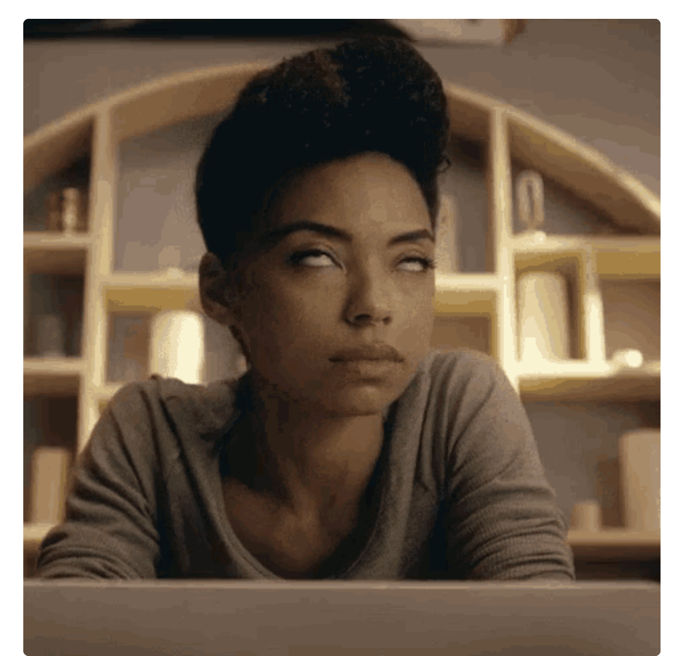

Gif Search
GIF Search uses Tanor API to and allow users to type a keyword on the search bar and render results that are based on user's keyword query.
View projectRediet is a Full-Stack Developer and a Student Ambassador at Make School based in San Fransico, CA. She loves maths and computing that led her to pursue software engineering as a profession. Algorithmic problems, back-end, and front-end development are the core of her programming interest.
GIF Search uses Tanor API to and allow users to type a keyword on the search bar and render results that are based on user's keyword query.
View projectAn imaginary place for kids to create an account for thier imaginary friends. Kids can post and edit a blog post on behalf of their imaginary friends about any topic of their choice.
View projectWay is determined to utilize our day by connecting and creating a give and take relationship.
View projectHasan's Tweet is a class project that used data structure concepts like Hash-Table, Linked-List, Time-Space complexity, and Markov Chain to manipulate Hasan Minhaj's comedy transcript and generate short jokes.
View project